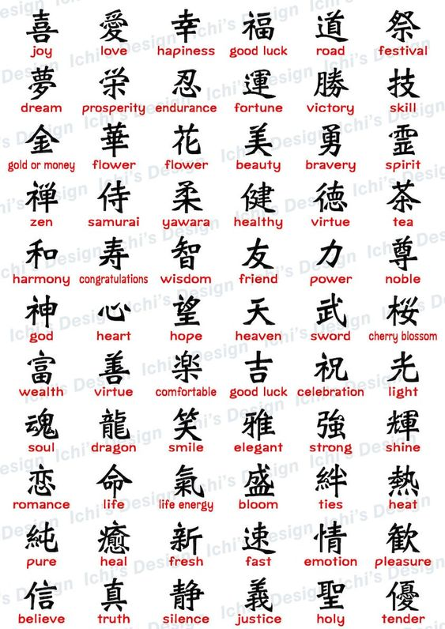

Depois de ter aprendido o Hiragana e o Katakana, chegamos no último, Kanji.
Kanji são ideogramas de origem chinesa. Sem dúvida é o alfabeto que gera maior curiosidade, pois seus caracteres lembram desenhos. Cada Kanji tem um significado e um som diferente. A maior dificuldade em aprendê-lo dá-se pelas suas diferentes maneiras de leitura.

Aqui você vê um tutorial para aprender a escrita.